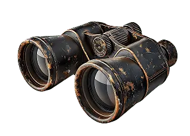
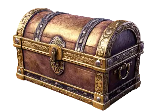

<section class="hints" id="hints">
  <div class="hints-container container">
    <div class="hints-header">
      
      <h2>Hints</h2>
    </div>
    <h3 class="hints-title">Play your way—with or without help</h3>
    <p class="hints-subtext hints-center">
      While the game is entirely free, optional support tools are available to
      smooth your journey. Use them as little or as often as you wish
    </p>

    <div class="hints-desktop-wrapper">
      <div class="hints-card hints-card-blue">
        
        <p class="hints-text">
          Hints reveal object locations, while skips let you bypass mini-games
          you’re stuck on. These tools are balanced for fairness—they never
          trivialize gameplay, but gently nudge you forward
        </p>
      </div>

      <div class="hints-card hints-card-dark">
        
        <p class="hints-text">
          For expert players, completing chapters without any assistance unlocks
          elite titles, profile effects, and permanent in-game bonuses
        </p>
      </div>
    </div>

    <div class="hints-final hints-center">
      <p>
        The choice is yours: embrace the full challenge or enjoy the story at
        your own pace
      </p>
    </div>
  </div>
</section>
